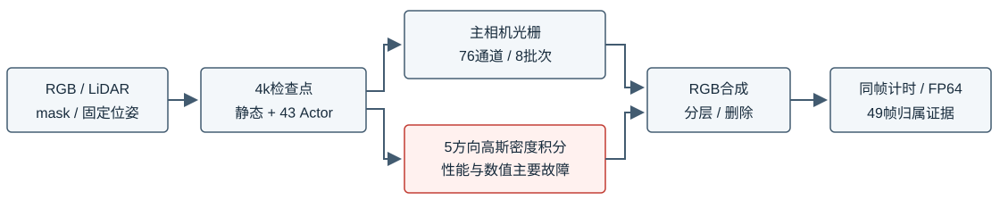
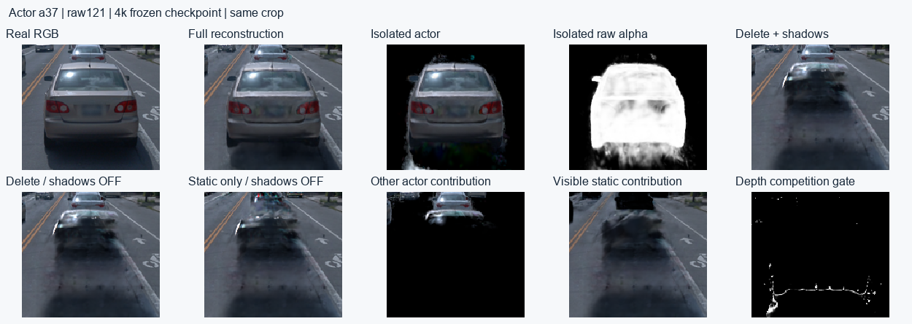
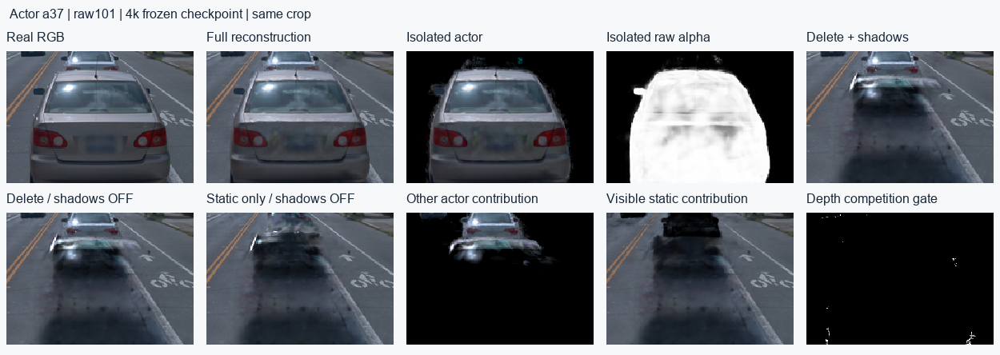
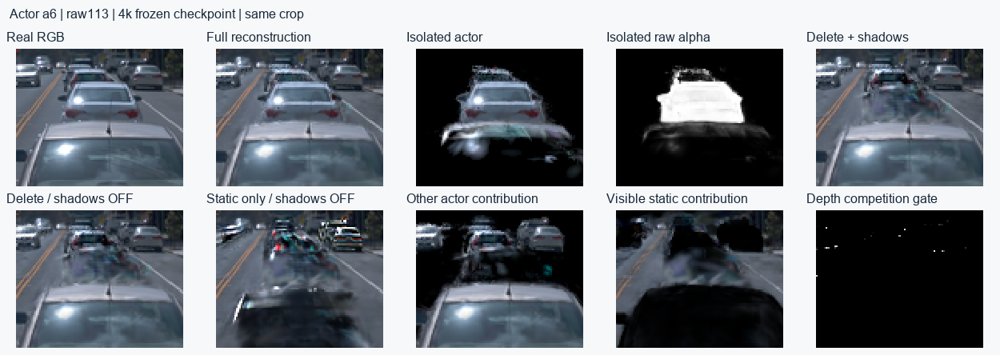
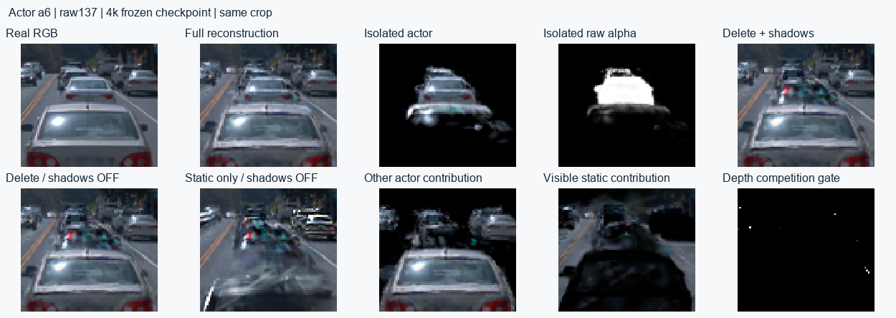
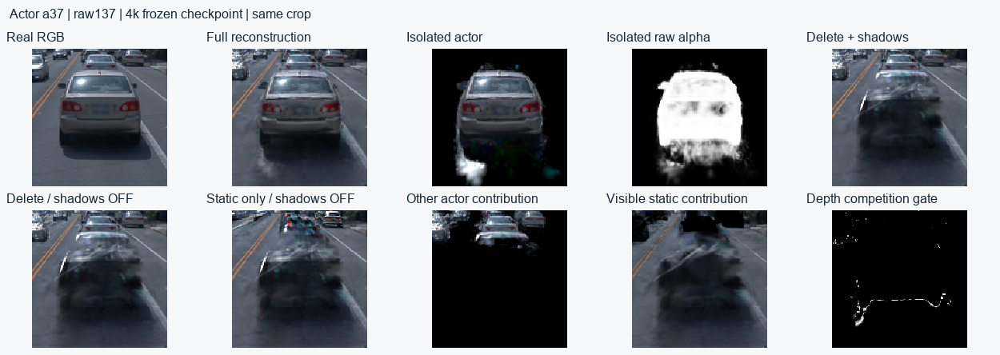

更新：2026-10-17T20:14:35+08:00 · 4k冻结检查点 · 49帧分层 / 46训练帧贡献 · 无subagent · 生产SGD新增0
阴影占同帧前向+反传的增量约91.6%，同时存在FP32矩阵失稳和严重分块依赖。a6/a37删除后关阴影仍留有静态车形外观；3k归属修正实际没有执行任何split或owner转移。候选提速和质量修复尚未应用，训练保持暂停。
旧版从原始测量完成GN11 30k，再完成实例30k，三段训练进程合计约181.5分钟。两版初始化、目标和工作量不同，但本次同模型关阴影对照足以定位当前主要开销，不能把慢90倍全部解释为“从头训练”。

训练worker、flock与controller均已终止并释放GPU，相关心跳原本PAUSED；已写入禁止自动续训/关机的标记。保存点是4000步，最后日志4100，未落盘部分未冒称已恢复。检查点已读回，包含完整模型、13组非空Adam状态和各RNG；使用独立硬链接保留。
/root/autodl-tmp/drivingeditor_repro/campaign/nearby_actors_20261015_v1/shadow_rebuild_20261017_v3/backend_restore_r15/paused_checkpoint_004000_20261017/checkpoint.pt
控制器增加启动暂停保护，实际执行返回0且没有启动worker；原控制器已备份。训练后端、损失、参数及CUDA ABI没有用诊断候选覆盖。旧控制器仍有初始step2断言，当前不能作为4k通用恢复入口。
| 严重性 | 类别 / 原因 | 实测证据 | 处理方向 |
|---|---|---|---|
| P0 | 数值正确性：FP32世界协方差及其显式求逆失稳 | raw107的976,304个有效Actor高斯中，11个实际FP32协方差已非正定，8个逆矩阵对称部分非正定；最大物理条件数2.38e+08。仅chunk512→2048就使部分透射率从1变为约1.8e-35，FP64参考约1。 | 先改为保留正定性的因子化/局部坐标积分，配FP64参考、分块不变性与梯度检查；仅增大chunk或追加clamp不合格。 |
| P0 | 性能主因：Python/Torch逐Actor、射线块、高斯块的小算子循环 | 同帧F+B 19.92s，关阴影1.68s，差额91.6%。单次无梯度完整前向记录380,987次cudaLaunchKernel，7,551次nonzero及13,640次cudaStreamSynchronize；阴影前向5.54/6.12s。 | 批处理太阳方向与候选对，缓存每帧/每块边界，避免Python读取GPU条件；建立融合积分/反传内核。算子计数来自额外profiling，不拿profiling墙钟当训练吞吐。 |
| P1 | 反传开销：对许多小积分块使用activation checkpoint | 1290次checkpoint使积分调用5715→7005，射线×高斯对3818万→6757万。禁用后F+B 16.82s，峰值约11.94GiB；原配置约19.92s、8.85–8.98GiB。 | 依据块大小和实际显存选择checkpoint，融合反传；当前只做副本诊断，未应用该变更。 |
| P1 | 重复工作：5个太阳方向串行重复调度和粗筛 | 5→1太阳样本时F+B约5.00s；同样5方向批处理的可见性前向4.67→1.77s，但最大透射率差0.00858。 | 保留5方向覆盖，先修数值，再验证批处理等价；减到1方向改变了软阴影模型，不能当无损提速。 |
| P1 | 规模放大：增密使Actor数量和阴影候选对急增 | Actor种子163,387→1,038,133（6.35倍）；总点771,821→2,068,305。a6由3453→123800（35.9倍）。训练相邻日志区间中位数从前1k约2.21s/步增至3k–4k约15.66s/步。 | 检查增密收益、空间组织和真实可见支持；先使用有效加速结构，不以删车底、截断点数或隐藏坏例代替修复。 |
| P1 | 主相机工作量：76通道被容量10的ABI拆为8次整景光栅 | 单次无梯度前向：整景8通道批次合计0.276s；加43路独立alpha和2路分支，共46函数调用、51底层通道pass。反传也要经过这些分支。 | 复用几何预处理/排序/分箱，评估融合多通道输出；不可把config容量直接写大而突破现有CUDA ABI。 |
| P2 | 独立分支：每步43实例独立alpha和2个孤立分支 | 无梯度独立alpha共0.125s，静/动态分支共0.039s。它们服务完整实例监督和竞争约束，有明确用途，但当前逐路提交有额外成本。 | 批量渲染/共享预处理，保持完整内外域与未知标签语义。不能为提速删掉监督。 |
| P2 | CPU与输入：逐步重新解码、验证、传输冻结监督；重复不变工作 | 本次frame构造/传输0.127s，旧诊断0.165s；每步还读legacy配置并把mask送CPU计算boundary_distance，即使本表示的NPS特征恒为0。 | 缓存冻结Frame/有效域、距离图、配置与相机；profile后再做异步搬运。该量级不足以解释十几秒的主差距。 |
| P2 | 周期成本：增密/SGCM、归属审计、保存与GPU锁等待 | 3k两轮全46帧归属审计约148.0+147.3s，split约6.6s、owner约45.5s；约5.8分钟，另有保存/锁等待。它们不会出现在每帧F+B中。 | 单列周期与排队成本，按同worker相邻区间算吞吐。当前证据不支持把每步16s归因于这些间歇工作。 |
| P2 | 已排除主因：Adam、梯度裁剪及天空采样不是主要瓶颈 | 零学习率副本Adam计时0.033s，梯度裁剪0.035s，屏幕梯度积累0.001s；场景几何求值约0.048s，天空采样0.0013s（无梯度）。 | 这些局部计时用于排除主因；父子模块耗时不可相加。无证据需要先更换GPU或增加CPU线程。 |
行间有父子和重复关系，时间/加速比不可相加。整步对照含前向与反传；模块计时为同步无梯度前向；算子计数来自独立profiler。三种口径分别报告。
| 副本设置 | 重复数 | 前向 s | 反传 s | 合计 s | 线性RGB最大差 |
|---|---|---|---|---|---|
| 原配置 | 2 | 8.386 | 11.535 | 19.920 | 0.000000 |
| 关阴影 | 2 | 0.605 | 1.072 | 1.677 | 0.158718 |
| 太阳样本5→1 | 2 | 1.985 | 3.017 | 5.002 | 0.013812 |
| 高斯块512→2048 | 2 | 2.639 | 3.998 | 6.637 | 0.093822 |
| 禁用积分checkpoint | 1 | 6.794 | 10.029 | 16.823 | 0.000000 |
raw107，4k、2,068,305点、43实例；PyTorch 2.2.2+cu118、RTX4080SUPER。完整训练日志3k–4k相邻区间中位数约15.66s/步，包含不同训练帧和周期事件，因此不能用本表单帧19.9s代替日志平均。lr=0 Adam状态更新在额外副本上单列0.033s，梯度裁剪0.035s；没有参数更新。
物理协方差的最大条件数约2.38×10⁸。FP32构造的矩阵已有11个非正定，显式求逆后的对称部分有8个非正定。实现又把积分二次型中的a和横向距离clamp为正，错误可能以有限的巨大光学厚度出现，普通“loss和梯度有限”检查不会发现。
317个活动道路网格点中，分块变化造成的最大透射率差为1.0。下表只列最大差异的5个点，FP64参考重新从保存的旋转/尺度/位姿构造协方差，对全部有效Actor点做无AABB稠密积分：
| 网格索引 | 原chunk512 | chunk2048 | 同模型FP64参考 |
|---|---|---|---|
| 79 | 1 | 1.8048515e-35 | 1 |
| 209 | 0.99968255 | 1.8048515e-35 | 0.99968249 |
| 50 | 1 | 0.17629224 | 1 |
| 49 | 1 | 0.34083056 | 1 |
| 283 | 0.96038991 | 0.62123555 | 1 |
即使后续运算改为FP64，继续使用原FP32逆矩阵仍把这些点算为几乎全遮挡；问题不只来自最后的求和。仅将c−b²/a改成残差二次型仍有58/66个接收点非有限，未作为修复采用。应先使用保留正定性的局部因子计算，再验分块、批次和梯度；当前没有以改大chunk、少太阳样本或关阴影掩盖错误。这一诊断不证明全部重建差距都由阴影数值错误造成。
删除明确移除该owner全部高斯。关阴影后残影仍在，静态层单独渲染也保留对应车形；a6还包含其他Actor的贡献。a37锚帧的删除阴影开关在原车身区的线性RGB MAE仅0.000045，而残影很明显，主要来源已定位到静态层。覆盖率不等于道路恢复正确。
| 锚帧 | 原车身像素 | 删除后静态可见α均值 | 其他Actor可见α均值 | 静/动态深度差中位数 | 竞争门控拒绝率 | 删除阴影开关MAE |
|---|---|---|---|---|---|---|
| a6 / raw105 | 1210 | 0.590 | 0.175 | 15.35 m | 100.00% | 0.001590 |
| a37 / raw121 | 9281 | 0.939 | 0.010 | 3.70 m | 98.66% | 0.000045 |

竞争约束的深度差上限是0.45m；a6锚帧的15.35m、a37的3.70m均超出范围。全49帧门控拒绝率中位数分别100.00%和99.40%。这类位于后方表面的外观重影没有被“同表面占用竞争”覆盖；把所有静态道路点直接转成Actor会引入新的错误。
3k审计紧接3000步opacity reset，最大单点α仅约0.01。两车没有任何点通过重复道路正证据门槛，真实split=0、Actor→static=0、static→Actor=0；仅新增459个真实测量池点（a6 188、a37 114）。4k的静态点中，source_candidate_owner为a6/a37的数量又都为0，现有静态转Actor规则对这两车没有候选入口。9k也与reset间隔重合。应调整有效审计时机并核查候选覆盖，而非把“审计脚本跑过”当成已经修正。
a6点数3453→123800，a37 10349→83130；中心越出软OBB分别29834、14573。软框约束只管中心，不保证高斯支撑干净。a6锚帧的已知车外raw alpha>0.05支撑1479像素，a37为3049像素，其中也可能包含合理遮挡支撑，不能全部判道路。保留完整mask内外监督、未知域及真实测量，不按高度切轮胎/底盘。




先修阴影数值并通过FP64/分块不变性/梯度测试；再把太阳与候选对批处理、缩减小checkpoint开销并复用光栅预处理；归属侧分别处理Actor碎片、静态外观残影和reset后的审计时机。每项先做固定检查点的可审查对照，再决定是否恢复训练。本次只诊断与发布代码，没有继续训练或宣称质量修复。
已覆盖逐步数据、几何、主光栅、阴影、反传、优化器、周期审计及锁等待的证据。后续material/joint实际训练未发生；此前当前点数的零更新探测约21.3/43.6s前后向，只能作风险提示。最终逐像素阴影成本未验收。FP64参考只验证一帧5个最大分块差异点；49帧分层包含已见开发QUERY，没有配对干净道路GT，不能据覆盖率证明补景正确。
同步计时与算子计数 · CPU调用剖析 · 分块与FP64参考 · 98条逐车逐帧记录 · 暂停/检查点凭据 · 旧版从头训练时间 · 严重性表JSON
实测代码：tracing.py的geometry_transmittance/_precision_integral、SunAmbient.visibility；raster.py的render_buffers/cuda_raster；model.py的train_image；competition.py；train.py中reset后保存再进入3k审计；owner_003000.py的来源候选与道路门槛。生产源保留，诊断源码随v82提交。
机制参考：PyTorch同步与小算子调度、checkpoint重计算、病态矩阵数值限制。本案结论来自实际代码与测量，引用不代替实测。failure refs：V82-F01 / F05 / F06；human_verdict=null，problem_solved=null。